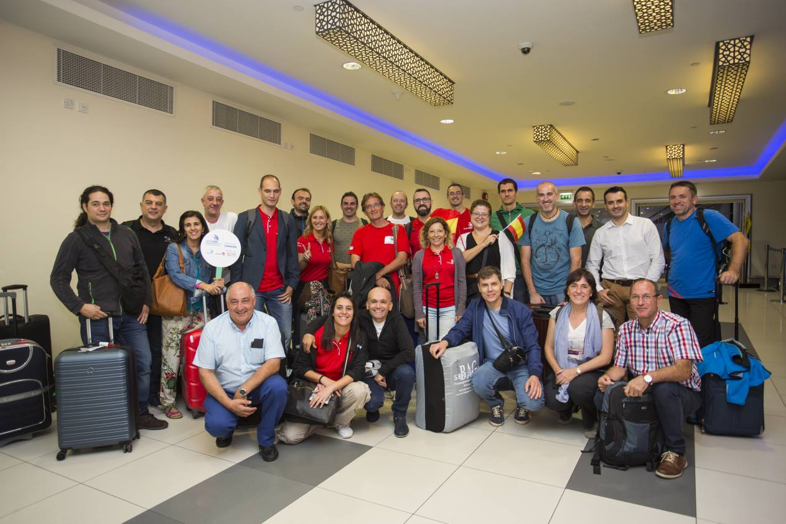
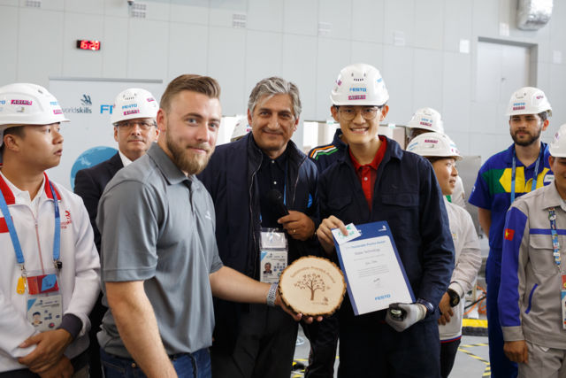
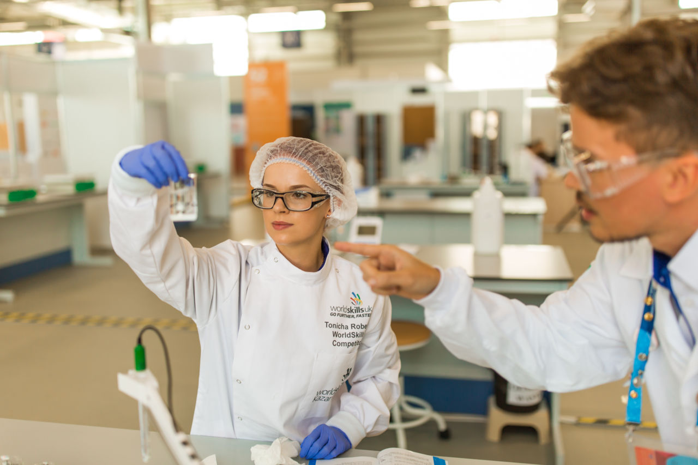

¿Qué son?
El Ministerio de Educación y Formación Profesional organiza y promueve competiciones de destrezas (skills, en inglés) que constituyen un valioso instrumento divulgativo de la Formación Profesional y un medio para estimular a estudiantes, profesorado y empresas, además de una plataforma de intercambio y un foro de debate sobre de la evolución de los estándares profesionales, la calidad y la innovación en los diferentes sectores productivos.
WorldSkills International y WorldSkills Europe son asociaciones no gubernamentales, sin ánimo de lucro, cuya principal actividad es organizar competiciones bienales de formación profesional. Ambas organizaciones reúnen a instituciones de formación profesional, empresas y asociaciones profesionales líderes los diversos sectores productivos, con los objetivos de difundir información y compartir conocimiento sobre la evolución de las destrezas profesionales, fomentar la calidad, la innovación y el intercambio cultural entre competidores y expertos de todo el mundo.
La pertenencia de España a estas organizaciones conlleva la celebración bienal de un campeonato nacional de Formación Profesional (Spainskills), que sirve para seleccionar a los competidores españoles que representan a España en las competiciones europeas (EuroSkills) y mundiales (WorldSkills).
Descubre que son las Web Skills
Las habilidades crean oportunidades y conectan sociedades. Son la base del progreso económico.
Las Web Skills generan confianza, empoderan a las comunidades y ayudan a impulsar las economías
Inspiramos a los jóvenes a desarrollar una pasión por las habilidades y la búsqueda de la excelencia, a través de concursos y promociones.
Saber más

Mejora en aquello que te apasiona
Elige algo que te guste o en lo que seas bueno.
Encuentra un miembro de las Web Skills que te ayude a mejorar y
desafiarte a tí mismo en una competencia de habilidades.
Mejora tus habilidades con nuestros programas y oportunidades
Forma parte de una comunidad global que mejora el mundo con el poder de las habilidades
